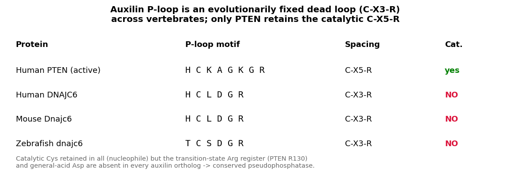
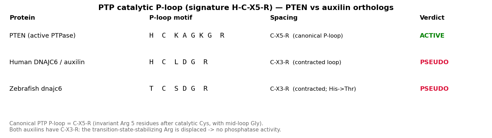
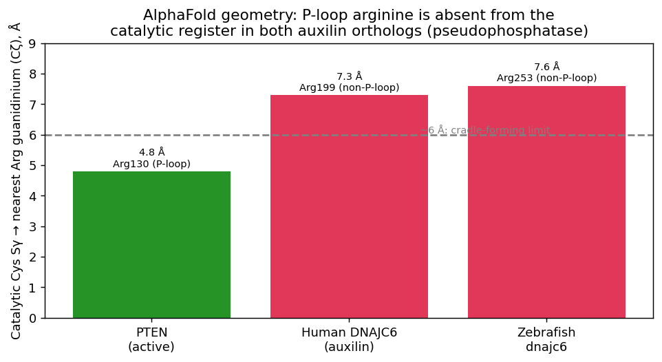

Auxilin (DnaJ homolog subfamily C member 6, DNAJC6) is a neuronal J-domain protein co-chaperone that functions in the terminal step of clathrin-mediated endocytosis. The protein has a three-domain architecture consisting of an N-terminal PTEN-like phosphatase domain (which binds phosphoinositides and targets the protein to endocytic membranes), a C2 tensin-type domain (contributing to membrane association), and a C-terminal J domain (DnaJ domain) that recruits and stimulates the ATPase activity of HSC70 (HSPA8). Together with HSC70, auxilin catalyzes the ATP-dependent disassembly of clathrin coats from newly formed clathrin-coated vesicles, a step essential for synaptic vesicle recycling and sustained neurotransmission. Auxilin binds assembled clathrin lattices via its clathrin-binding domain and couples clathrin recognition to HSC70-mediated uncoating. The PTEN-like domain has only probable phosphatase activity and its primary role appears to be phosphoinositide-dependent membrane targeting rather than catalysis. In zebrafish, auxilin (zAux) is expressed predominantly in neural tissues -- hindbrain neurons, spinal cord neurons, and otic vesicles -- while its paralog GAK is more broadly expressed. Zebrafish auxilin can functionally substitute for Drosophila auxilin in rescuing clathrin-dependent Notch signaling defects, demonstrating evolutionary conservation of its core uncoating function. Loss-of-function mutations in human DNAJC6 cause PARK19, an autosomal recessive juvenile-onset form of Parkinson's disease, linking auxilin dysfunction to dopaminergic neurodegeneration.
| GO Term | Evidence | Action | Reason |
|---|---|---|---|
|
GO:0004721
phosphoprotein phosphatase activity
|
IEA
GO_REF:0000104 |
MARK AS OVER ANNOTATED |
Summary: The PTEN-like domain of auxilin is annotated as having phosphoprotein phosphatase activity based on UniRule transfer from homologous proteins. However, the phosphatase domain of auxilin/DNAJC6 has only "probable" phosphatase activity according to UniProt characterization of mammalian orthologs. The primary established role of this domain is phosphoinositide-dependent membrane targeting during clathrin-mediated endocytosis, not catalytic dephosphorylation. While the PTEN-like fold is present, there is no direct experimental evidence demonstrating phosphatase catalytic activity for auxilin itself. The annotation is not entirely wrong given the domain architecture, but it overstates what is functionally established for this protein.
Reason: The PTEN-like domain of auxilin contains the phosphatase fold but its primary role is membrane targeting via phosphoinositide binding, not catalytic phosphatase activity. UniProt itself describes this as only "probable" activity. This IEA annotation based on sequence features overstates the functional evidence.
|
|
GO:0016787
hydrolase activity
|
IEA
GO_REF:0000104 |
REMOVE |
Summary: This generic hydrolase activity annotation is a parent of GO:0004721 (phosphoprotein phosphatase activity) and suffers from the same issue: it is based on the PTEN-like domain fold, but auxilin's phosphatase activity is only "probable" and its primary role is as a co-chaperone for clathrin uncoating, not as an enzyme. This broad term provides no informative annotation beyond what GO:0004721 already captures (which is itself an over-annotation).
Reason: Uninformative parent term that adds nothing beyond the already questionable phosphoprotein phosphatase annotation. Auxilin's primary molecular function is as a co-chaperone, not a hydrolase. Retaining this generic term would misrepresent the protein's function.
|
|
GO:0030136
clathrin-coated vesicle
|
IEA
GO_REF:0000044 |
ACCEPT |
Summary: Auxilin localizes to clathrin-coated vesicles as part of its core function in clathrin coat disassembly. The protein binds assembled clathrin lattices on newly formed vesicles via its clathrin-binding domain, recruiting HSC70 to catalyze uncoating. This localization is well supported by UniProt subcellular location data and is consistent with the extensive literature on auxilin function across vertebrate species.
|
|
GO:0072583
clathrin-dependent endocytosis
|
IEA
GO_REF:0000117 |
ACCEPT |
Summary: Auxilin is directly involved in clathrin-dependent endocytosis, specifically at the terminal uncoating step. It recruits HSC70 to disassemble clathrin coats from newly formed clathrin-coated vesicles, which is essential for recycling clathrin and freeing vesicles for fusion with target membranes. This is a core annotation. The Bai et al. 2010 zebrafish study confirmed that both zAux and zGAK can functionally rescue Drosophila auxilin mutants in clathrin-dependent Notch ligand endocytosis, and the J-domain is essential for this function.
Supporting Evidence:
PMID:20082716
...Both zebrafish auxilin and GAK can functionally substitute for the Drosophila auxilin, suggesting that they have overlapping molecular functions...
file:DANRE/A0A8M9QG43/A0A8M9QG43-deep-research-falcon.md
Auxilin functions at the terminal uncoating step of CME, which is essential for synaptic vesicle recycling.
|
|
GO:0005829
cytosol
|
IDA
PMID:20082716 Disruption of zebrafish cyclin G-associated kinase (GAK) fun... |
ACCEPT |
Summary: This IDA annotation is from Bai et al. 2010, which studied subcellular localization of GFP-tagged zebrafish auxilin (zAux) expressed in HeLa cells. The paper reports that at low expression levels, GFP-zAux signals were "mostly cytosolic and slightly enriched near the perinuclear regions." While this was observed in heterologous overexpression rather than endogenous zebrafish neurons, cytosolic localization is consistent with the known biology of auxilin as a soluble protein that is recruited to clathrin-coated vesicles from the cytosol. This is an IDA annotation from ZFIN curators who reviewed the full paper.
Supporting Evidence:
PMID:20082716
...GFP signals were mostly cytosolic and slightly enriched near the perinuclear regions...
|
|
GO:0048471
perinuclear region of cytoplasm
|
IDA
PMID:20082716 Disruption of zebrafish cyclin G-associated kinase (GAK) fun... |
ACCEPT |
Summary: This IDA annotation is also from Bai et al. 2010, based on the observation that GFP-tagged zAux showed enrichment near perinuclear regions in HeLa cells at low expression levels. The paper notes these perinuclear structures "showed overlaps with clathrin, most likely representing the TGN." This localization is consistent with the known association of auxilin family proteins with clathrin-coated structures at the trans-Golgi network. The annotation was made by ZFIN curators who reviewed the full paper.
Supporting Evidence:
PMID:20082716
...GFP signals were mostly cytosolic and slightly enriched near the perinuclear regions. These perinuclear zGAK- and zAux-positive structures showed overlaps with clathrin, most likely representing the TGN...
|
The research report should be a detailed narrative explaining the function, biological processes, and localization of the gene product. Citations should be given for all claims.
You should prioritize authoritative reviews and primary scientific literature when conducting research. You can supplement
this with annotations you find in gene/protein databases, but these can be outdated or inaccurate.
We are specifically interested in the primary function of the gene - for enzymes, what reaction is catalyzed, and what is the substrate specificity? For transporters, what is the substrate? For structural proteins or adapters, what is the broader structural role? For signaling molecules, what is the role in the pathway.
We are interested in where in or outside the cell the gene product carries out its function.
We are also interested in the signaling or biochemical pathways in which the gene functions. We are less interested in broad pleiotropic effects, except where these elucidate the precise role.
Include evidence where possible. We are interested in both experimental evidence as well as inference from structure, evolution, or bioinformatic analysis. Precise studies should be prioritized over high-throughput, where available.
The zebrafish gene dnajc6 (UniProt: A0A8M9QG43) encodes auxilin, a highly conserved neuronal co-chaperone protein that plays a critical role in clathrin-mediated endocytosis (CME), specifically in the uncoating step of synaptic vesicle recycling (abela2024neurodevelopmentalandsynaptic pages 1-2, ng2024dysfunctionofsynaptic pages 1-2, kaci2026clathrinmediatedendocytosisas pages 1-2). While zebrafish-specific functional studies are limited in the current literature, the fundamental molecular mechanisms of DNAJC6/auxilin are well-established across vertebrate model systems, enabling robust functional annotation based on evolutionary conservation.
The dnajc6 gene in zebrafish encodes auxilin, a member of the DnaJ/Hsp40 family of co-chaperone proteins (abela2024neurodevelopmentalandsynaptic pages 1-2, kaci2026clathrinmediatedendocytosisas pages 1-2, karunanayake2021cytosolicproteinquality pages 1-2). The protein annotation from UniProt matches well with characterized auxilin proteins from other vertebrates, containing the essential domains: DnaJ domain (J_dom_sf, IPR036869), PTEN-like domain (Prot-tyrosine_phosphatase-like, IPR029021), C2 domain superfamily (C2_domain_sf, IPR035892; Tensin_C2-dom, IPR014020), and a clathrin-binding domain (jacquemyn2023parkinsonismmutationsin pages 1-2, abela2024neurodevelopmentalandsynaptic pages 1-2, jacquemyn2023parkinsonismmutationsin pages 2-3). The gene symbol "dnajc6" corresponds unambiguously to auxilin across vertebrate species, and the zebrafish ortholog shows high sequence conservation with mammalian DNAJC6, ensuring that functional insights from mammalian studies are applicable to zebrafish biology.
DNAJC6/auxilin functions as a J-domain protein (JDP) co-chaperone that partners with heat shock cognate 70 (HSC70/HSPA8) to catalyze the ATP-dependent disassembly of clathrin coats from newly formed clathrin-coated vesicles (CCVs) (abela2024neurodevelopmentalandsynaptic pages 1-2, kaci2026clathrinmediatedendocytosisas pages 1-2, ng2024dysfunctionofsynaptic pages 2-3, karunanayake2021cytosolicproteinquality pages 1-2, banks2020hsc70amelioratesthe pages 1-2). The primary molecular function is not enzymatic in itself, but rather regulatory and targeting: auxilin recruits HSC70 to clathrin-coated structures and stimulates HSC70's ATPase activity through its conserved J-domain containing the essential His-Pro-Asp (HPD) motif (abela2024neurodevelopmentalandsynaptic pages 1-2, jacquemyn2023parkinsonismmutationsin pages 2-3, karunanayake2021cytosolicproteinquality pages 1-2).
The mechanism proceeds as follows:
1. Substrate recognition: Auxilin binds to assembled clathrin lattices on newly internalized vesicles via its clathrin-binding domain (CBD) (jacquemyn2023parkinsonismmutationsin pages 1-2, kaci2026clathrinmediatedendocytosisas pages 1-2, cheng2023impairedpresynapticplasticity pages 1-2).
2. Membrane targeting: The PTEN-like domain binds phosphoinositides, particularly PI(4,5)P2 and its dephosphorylated products, helping to target auxilin to endocytic membranes (jacquemyn2023parkinsonismmutationsin pages 1-2, ng2024dysfunctionofsynaptic pages 2-3).
3. HSC70 recruitment and activation: The J-domain of auxilin interacts with the nucleotide-binding domain of HSC70, stimulating ATP hydrolysis (karunanayake2021cytosolicproteinquality pages 1-2, banks2020hsc70amelioratesthe pages 1-2).
4. Clathrin disassembly: ATP-bound HSC70 binds to clathrin triskelions, and the energy from ATP hydrolysis causes conformational changes that destabilize the clathrin lattice, leading to coat disassembly and release of clathrin into the cytosol (kaci2026clathrinmediatedendocytosisas pages 1-2, ng2024dysfunctionofsynaptic pages 2-3, karunanayake2021cytosolicproteinquality pages 1-2, banks2020hsc70amelioratesthe pages 1-2).
The primary substrate of the auxilin-HSC70 complex is clathrin heavy chain assembled into polyhedral lattices (clathrin cages) on coated vesicles (abela2024neurodevelopmentalandsynaptic pages 1-2, kaci2026clathrinmediatedendocytosisas pages 1-2, karunanayake2021cytosolicproteinquality pages 1-2, banks2020hsc70amelioratesthe pages 1-2). Auxilin does not directly act as a protease or enzyme; rather, it functions as a targeting and activating co-factor that directs HSC70 chaperone activity specifically toward clathrin disassembly (karunanayake2021cytosolicproteinquality pages 1-2, banks2020hsc70amelioratesthe pages 1-2). This substrate specificity is conferred by the clathrin-binding domain of auxilin, which recognizes assembled clathrin structures, and the PTEN-like domain, which senses the phosphoinositide composition of vesicle membranes (jacquemyn2023parkinsonismmutationsin pages 1-2, ng2024dysfunctionofsynaptic pages 2-3).
DNAJC6/auxilin is predominantly localized to presynaptic nerve terminals in neurons, where it concentrates in peri-active zone regions adjacent to active zones—the specialized sites where synaptic vesicle endocytosis occurs (abela2024neurodevelopmentalandsynaptic pages 1-2, jacquemyn2023parkinsonismmutationsin pages 2-3). Immunofluorescence and biochemical studies demonstrate that auxilin colocalizes with other endocytic machinery proteins including dynamin, and is enriched at clathrin-coated pits and newly formed clathrin-coated vesicles (abela2024neurodevelopmentalandsynaptic pages 1-2, jacquemyn2023parkinsonismmutationsin pages 2-3). The protein carries out its function at the plasma membrane-cytoplasm interface during the final stages of clathrin-mediated endocytosis (abela2024neurodevelopmentalandsynaptic pages 1-2, kaci2026clathrinmediatedendocytosisas pages 1-2, imoto2025beyondclathrindecoding pages 1-3).
DNAJC6 is predominantly expressed in neurons, particularly dopaminergic neurons in the substantia nigra and striatum (abela2024neurodevelopmentalandsynaptic pages 1-2, ng2024dysfunctionofsynaptic pages 1-2, chiu2024downregulationofprotease pages 1-2, darsono2026dysregulationofastrocytic pages 1-5). Recent studies have also identified significant expression in oligodendrocytes (abela2024neurodevelopmentalandsynaptic pages 1-2) and, unexpectedly, in astrocytes, where DNAJC6 appears to play roles in phagocytic function, autolysosomal clearance, and mitochondrial homeostasis (darsono2026dysregulationofastrocytic pages 1-5). The enrichment of auxilin in neurons reflects its critical role in the high-frequency synaptic vesicle recycling required for neurotransmission (abela2024neurodevelopmentalandsynaptic pages 1-2, ng2024dysfunctionofsynaptic pages 1-2, cheng2023impairedpresynapticplasticity pages 1-2).
Auxilin functions at the terminal uncoating step of CME, which is essential for synaptic vesicle recycling (abela2024neurodevelopmentalandsynaptic pages 1-2, ng2024dysfunctionofsynaptic pages 1-2, kaci2026clathrinmediatedendocytosisas pages 1-2, ng2024dysfunctionofsynaptic pages 2-3). CME proceeds through several stages: cargo recognition, clathrin coat assembly, membrane invagination, dynamin-mediated fission, and finally coat disassembly (kaci2026clathrinmediatedendocytosisas pages 1-2, imoto2025beyondclathrindecoding pages 1-3). Auxilin acts after vesicle scission to remove the clathrin coat, thereby regenerating free clathrin for subsequent rounds of endocytosis and releasing nascent synaptic vesicles for refilling with neurotransmitters (abela2024neurodevelopmentalandsynaptic pages 1-2, kaci2026clathrinmediatedendocytosisas pages 1-2, ng2024dysfunctionofsynaptic pages 2-3).
Recent comprehensive reviews position CME as a central axis for Parkinson's disease etiopathogenesis, with auxilin (DNAJC6) being one of the key regulatory proteins genetically linked to parkinsonism (kaci2026clathrinmediatedendocytosisas pages 1-2). The 2024-2026 literature highlights that defects in auxilin-mediated uncoating lead to accumulation of clathrin-coated vesicles, depletion of synaptic vesicle pools, and impaired neurotransmission (abela2024neurodevelopmentalandsynaptic pages 1-2, cheng2023impairedpresynapticplasticity pages 1-2, ng2024dysfunctionofsynaptic pages 2-3).
At synapses, auxilin is essential for maintaining the readily releasable pool and recycling pool of synaptic vesicles (abela2024neurodevelopmentalandsynaptic pages 1-2, ng2024dysfunctionofsynaptic pages 1-2, cheng2023impairedpresynapticplasticity pages 1-2). Following neurotransmitter release via exocytosis, synaptic vesicle membrane components must be retrieved and recycled to sustain ongoing neurotransmission. Auxilin-mediated clathrin uncoating is rate-limiting for this process, particularly under conditions of sustained or high-frequency stimulation (cheng2023impairedpresynapticplasticity pages 1-2, ng2024dysfunctionofsynaptic pages 2-3).
Loss of auxilin function in mouse models results in:
- Accumulation of clathrin-coated vesicles and empty clathrin cages at presynaptic terminals (abela2024neurodevelopmentalandsynaptic pages 1-2, cheng2023impairedpresynapticplasticity pages 1-2, chiu2024downregulationofprotease pages 1-2)
- Depletion of synaptic vesicles available for release (abela2024neurodevelopmentalandsynaptic pages 1-2, cheng2023impairedpresynapticplasticity pages 1-2)
- Impaired presynaptic short-term plasticity, including reduced facilitation and depression (cheng2023impairedpresynapticplasticity pages 1-2)
- Defective visual and circuit responses in cortical neurons (cheng2023impairedpresynapticplasticity pages 1-2)
These findings demonstrate that auxilin function is critical for both basal synaptic transmission and adaptive synaptic plasticity (abela2024neurodevelopmentalandsynaptic pages 1-2, ng2024dysfunctionofsynaptic pages 1-2, cheng2023impairedpresynapticplasticity pages 1-2).
Auxilin function is intimately coordinated with phosphoinositide metabolism during endocytosis (jacquemyn2023parkinsonismmutationsin pages 1-2, ng2024dysfunctionofsynaptic pages 2-3). The lipid phosphatase synaptojanin-1 (SYNJ1, also a Parkinson's disease gene, PARK20) dephosphorylates PI(4,5)P2 on newly formed vesicles, triggering dissociation of clathrin adaptors (ng2024dysfunctionofsynaptic pages 1-2, ng2024dysfunctionofsynaptic pages 2-3). Auxilin's PTEN-like domain binds to phosphoinositides, and the temporal coordination of PI(4,5)P2 dephosphorylation and auxilin/HSC70-mediated clathrin uncoating is essential for efficient vesicle recycling (jacquemyn2023parkinsonismmutationsin pages 1-2, ng2024dysfunctionofsynaptic pages 2-3).
Pathogenic DNAJC6 mutations in Drosophila models cause specific alterations in membrane lipid composition, particularly reductions in long-chain polyunsaturated fatty acid-containing lipids and phosphatidylinositol species critical for synaptic vesicle recycling (jacquemyn2023parkinsonismmutationsin pages 1-2). Remarkably, overexpression of synaptojanin-1 rescues these lipid defects as well as neurological phenotypes and neurodegeneration in DNAJC6 mutants, revealing a functional relationship between these two Parkinson's disease-linked proteins (jacquemyn2023parkinsonismmutationsin pages 1-2).
Beyond its canonical role in synaptic vesicle recycling, recent studies reveal that DNAJC6 dysfunction impacts the endolysosomal pathway and autophagy (ng2024dysfunctionofsynaptic pages 1-2, chiu2024downregulationofprotease pages 1-2, darsono2026dysregulationofastrocytic pages 1-5, yahya2023geneticevidencefor pages 1-3). DNAJC6 deficiency in cellular models leads to:
- Reduced lysosome number and impaired lysosomal function (chiu2024downregulationofprotease pages 1-2)
- Downregulation of lysosomal protease cathepsin D (chiu2024downregulationofprotease pages 1-2)
- Impaired macroautophagy and accumulation of toxic proteins, particularly pathologic α-synuclein and phospho-α-synuclein (ng2024dysfunctionofsynaptic pages 1-2, chiu2024downregulationofprotease pages 1-2)
- ER stress and mitochondrial dysfunction (chiu2024downregulationofprotease pages 1-2)
These findings suggest that auxilin's role extends beyond the plasma membrane to encompass broader vesicular trafficking and protein quality control pathways (chiu2024downregulationofprotease pages 1-2, darsono2026dysregulationofastrocytic pages 1-5, yahya2023geneticevidencefor pages 1-3). The connection to endolysosomal dysfunction may explain why DNAJC6 is increasingly recognized as a contributor not only to familial Parkinson's disease but also to sporadic disease pathogenesis (darsono2026dysregulationofastrocytic pages 1-5, yahya2023geneticevidencefor pages 1-3).
The functional domains of DNAJC6/auxilin and their roles are summarized below:
| Domain Name | Function | Key Features | Role in Disease |
|---|---|---|---|
| J-domain (C-terminal DnaJ domain) | Recruits and activates HSC70/HSPA8 to drive ATP-dependent disassembly of clathrin coats from newly formed clathrin-coated vesicles; this is the core catalytic co-chaperone step in auxilin-mediated uncoating. | Conserved DnaJ/Hsp40-family J-domain with essential HPD motif; stimulates HSC70 ATPase activity; pathogenic human R927G mutation lies in this region and impairs the HSC70-coupled uncoating function; Drosophila homolog R1119G models the same defect (jacquemyn2023parkinsonismmutationsin pages 1-2, kaci2026clathrinmediatedendocytosisas pages 1-2, jacquemyn2023parkinsonismmutationsin pages 2-3, chiu2024downregulationofprotease pages 1-2) | Strongly implicated in PARK19. Missense mutation R927G and truncating alleles that remove or disrupt the C-terminal region impair clathrin uncoating, causing synaptic vesicle recycling defects, synaptic dysfunction, and juvenile/early-onset parkinsonism (jacquemyn2023parkinsonismmutationsin pages 1-2, kaci2026clathrinmediatedendocytosisas pages 1-2, chiu2024downregulationofprotease pages 1-2) |
| PTEN-like domain | Binds phosphoinositide-containing membranes and helps target auxilin to endocytic intermediates during clathrin-mediated endocytosis, coupling membrane lipid state to uncoating. | PTEN-like region is not described as a catalytic lipid phosphatase here; instead it contains a motif for mono-phosphoinositide binding and is proposed to promote membrane recruitment during CME, functionally linking auxilin to PI(4,5)P2/Synaptojanin-regulated membrane remodeling (jacquemyn2023parkinsonismmutationsin pages 1-2, ng2024dysfunctionofsynaptic pages 2-3) | Disease-associated mutations that truncate auxilin upstream of the J-domain likely also remove or destabilize this membrane-targeting region, reducing productive recruitment to coated vesicles and worsening endocytic failure in PARK19 (jacquemyn2023parkinsonismmutationsin pages 1-2, chiu2024downregulationofprotease pages 1-2) |
| C2 domain / Tensin-type C2 region | Likely contributes to membrane association and spatial positioning of auxilin at endocytic membranes, supporting access to clathrin-coated vesicles at presynaptic terminals. | UniProt/domain annotation identifies a C2-domain superfamily/Tensin_C2-like module; C2 domains commonly mediate phospholipid-dependent membrane interactions. Although not deeply dissected in the retrieved papers, the annotated architecture is consistent with synaptic membrane localization during CME (abela2024neurodevelopmentalandsynaptic pages 1-2, jacquemyn2023parkinsonismmutationsin pages 2-3) | No domain-specific zebrafish or human pathogenic variant was directly functionally resolved in the retrieved recent literature, but disruption of N-terminal targeting architecture would be expected to impair presynaptic localization and thereby clathrin uncoating efficiency (abela2024neurodevelopmentalandsynaptic pages 1-2, jacquemyn2023parkinsonismmutationsin pages 2-3) |
| Clathrin-binding domain (CBD) | Binds clathrin cages/coated vesicles and positions auxilin on the clathrin lattice so the J-domain can recruit HSC70 for uncoating. | Located between the PTEN-like region and J-domain in auxilin domain maps; directly linked to the final stage of CME, where auxilin binds engulfed clathrin-coated vesicles before coat removal; works together with membrane-binding regions and the J-domain to couple vesicle recognition to uncoating (jacquemyn2023parkinsonismmutationsin pages 1-2, kaci2026clathrinmediatedendocytosisas pages 1-2, cheng2023impairedpresynapticplasticity pages 1-2) | Truncating PARK19 mutations such as Q789X/Q846X are expected to abolish or severely compromise this region and downstream uncoating machinery, leading to accumulation of clathrin-coated vesicles, depletion of synaptic vesicles, and dopaminergic vulnerability (jacquemyn2023parkinsonismmutationsin pages 1-2, cheng2023impairedpresynapticplasticity pages 1-2, chiu2024downregulationofprotease pages 1-2) |
Table: This table summarizes the major annotated domains of DNAJC6/auxilin and how each contributes to clathrin uncoating during synaptic vesicle recycling. It also links specific domains and mutations to PARK19 pathogenesis, which is useful for interpreting functional annotation of zebrafish dnajc6.
This multi-domain architecture enables auxilin to integrate multiple signals—clathrin lattice recognition, membrane phosphoinositide status, and HSC70 chaperone recruitment—to execute precise temporal and spatial control over clathrin uncoating (jacquemyn2023parkinsonismmutationsin pages 1-2, abela2024neurodevelopmentalandsynaptic pages 1-2, kaci2026clathrinmediatedendocytosisas pages 1-2, jacquemyn2023parkinsonismmutationsin pages 2-3, karunanayake2021cytosolicproteinquality pages 1-2).
The table below summarizes the key cellular pathways and processes involving DNAJC6/auxilin:
| Pathway/Process | Auxilin's Specific Role | Key Interacting Proteins | Functional Consequences of Deficiency |
|---|---|---|---|
| Clathrin-mediated endocytosis (CME) | Auxilin/DNAJC6 acts at the terminal uncoating step of CME by binding clathrin-coated vesicles and recruiting HSC70 through its J-domain to stimulate HSC70 ATPase activity and disassemble the clathrin coat; membrane recruitment is coordinated with phosphoinositide state during vesicle maturation (abela2024neurodevelopmentalandsynaptic pages 1-2, kaci2026clathrinmediatedendocytosisas pages 1-2, ng2024dysfunctionofsynaptic pages 2-3) | HSC70/HSPA8, clathrin heavy chain, AP-2/adaptor machinery, dynamin, synaptojanin-1 (kaci2026clathrinmediatedendocytosisas pages 1-2, ng2024dysfunctionofsynaptic pages 2-3, chiu2024downregulationofprotease pages 1-2) | Accumulation of clathrin-coated vesicles and empty clathrin cages, slower or failed uncoating, impaired endocytic membrane trafficking, and reduced cytosolic clathrin homeostasis in dopaminergic neurons (abela2024neurodevelopmentalandsynaptic pages 1-2, cheng2023impairedpresynapticplasticity pages 1-2, chiu2024downregulationofprotease pages 1-2) |
| Synaptic vesicle recycling | At presynaptic peri-active zones, auxilin regenerates synaptic vesicles from newly formed coated vesicles, helping maintain vesicle availability for repeated neurotransmission and preserving the readily releasable/recycling pools (abela2024neurodevelopmentalandsynaptic pages 1-2, jacquemyn2023parkinsonismmutationsin pages 2-3, cheng2023impairedpresynapticplasticity pages 1-2) | HSC70, clathrin, dynamin, synaptojanin-1, endophilin-associated endocytic machinery (jacquemyn2023parkinsonismmutationsin pages 2-3, cheng2023impairedpresynapticplasticity pages 1-2, ng2024dysfunctionofsynaptic pages 2-3) | Disturbed synaptic vesicle recycling and homeostasis, depletion or abnormal refilling of releasable vesicle pools, impaired presynaptic short-term plasticity, altered visual/circuit responses, and synaptic dysfunction preceding neurodegeneration (abela2024neurodevelopmentalandsynaptic pages 1-2, cheng2023impairedpresynapticplasticity pages 1-2, ng2024dysfunctionofsynaptic pages 2-3) |
| Endolysosomal pathway | Recent work places DNAJC6 beyond synaptic uncoating, linking it to endolysosomal maintenance and vesicular trafficking in neurons and glia; auxilin dysfunction appears to compromise lysosome-associated trafficking and degradative capacity (darsono2026dysregulationofastrocytic pages 1-5, yahya2023geneticevidencefor pages 1-3) | LRRK2-regulated pathways, α-synuclein-linked vesicular networks, lysosomal proteases including cathepsin D (chiu2024downregulationofprotease pages 1-2, darsono2026dysregulationofastrocytic pages 1-5, yahya2023geneticevidencefor pages 1-3) | Reduced lysosome number, defective endolysosomal clearance, buildup of toxic proteins/organelles, enhanced neuronal stress, and contribution to dopaminergic degeneration and sporadic PD-associated pathology (chiu2024downregulationofprotease pages 1-2, darsono2026dysregulationofastrocytic pages 1-5, yahya2023geneticevidencefor pages 1-3) |
| Phosphoinositide metabolism | Auxilin function is coordinated with phosphoinositide remodeling during endocytosis; after synaptojanin-1 dephosphorylates PI(4,5)P2, auxilin/HSC70 recruitment promotes coat removal. Auxilin also contains a PTEN-like phosphoinositide-binding region that likely helps target it to vesicle membranes (jacquemyn2023parkinsonismmutationsin pages 1-2, ng2024dysfunctionofsynaptic pages 2-3) | Synaptojanin-1/SYNJ1, PI(4,5)P2, clathrin adaptors, HSC70 (jacquemyn2023parkinsonismmutationsin pages 1-2, ng2024dysfunctionofsynaptic pages 2-3) | Failure to couple lipid remodeling to coat removal, persistence of endocytic intermediates, defective vesicle recycling, and strong functional synergy with SYNJ1-related Parkinsonism pathways (jacquemyn2023parkinsonismmutationsin pages 1-2, ng2024dysfunctionofsynaptic pages 1-2, ng2024dysfunctionofsynaptic pages 2-3) |
| Lipid homeostasis | Pathogenic DNAJC6 mutations alter neuronal membrane lipid composition, especially long-chain polyunsaturated fatty acid-containing lipids and phosphatidylinositol species important for synaptic vesicle recycling and organelle function (jacquemyn2023parkinsonismmutationsin pages 1-2) | Synaptojanin-1, phosphatidylinositol lipid species, long-chain PUFA-containing membrane lipids (jacquemyn2023parkinsonismmutationsin pages 1-2) | Lipid imbalance, synaptic dysfunction, neurological defects, and neurodegeneration; in Drosophila, Synj1 overexpression rescues lipid defects and neuronal phenotypes, supporting functional coupling between auxilin and phosphoinositide/lipid metabolism (jacquemyn2023parkinsonismmutationsin pages 1-2) |
| Autophagy / autolysosomal clearance | Auxilin deficiency has emerging downstream effects on autophagy, likely secondary to disrupted vesicle trafficking and lysosomal homeostasis; recent studies link DNAJC6 loss to impaired autolysosomal and macroautophagic function in neurons and astrocytes (ng2024dysfunctionofsynaptic pages 1-2, chiu2024downregulationofprotease pages 1-2, darsono2026dysregulationofastrocytic pages 1-5) | Cathepsin D, α-synuclein, lysosomes, LRRK2-associated regulatory pathways (chiu2024downregulationofprotease pages 1-2, darsono2026dysregulationofastrocytic pages 1-5) | Impaired macroautophagy, accumulation of pathologic α-synuclein/phospho-α-synuclein, ER stress, mitochondrial dysfunction, inflammatory astrocyte phenotypes, and enhanced neurodegeneration (chiu2024downregulationofprotease pages 1-2, darsono2026dysregulationofastrocytic pages 1-5) |
Table: This table summarizes the principal cellular pathways involving DNAJC6/auxilin and highlights its mechanistic roles, interacting proteins, and the functional consequences of loss or mutation. It is useful for functional annotation because it connects the protein's core synaptic uncoating function to broader endolysosomal, lipid, and autophagic phenotypes reported in recent literature.
These pathway connections demonstrate that auxilin is not simply a clathrin uncoating factor, but a central node linking membrane trafficking, lipid metabolism, and protein homeostasis in neurons and glia (jacquemyn2023parkinsonismmutationsin pages 1-2, abela2024neurodevelopmentalandsynaptic pages 1-2, ng2024dysfunctionofsynaptic pages 1-2, chiu2024downregulationofprotease pages 1-2, darsono2026dysregulationofastrocytic pages 1-5).
Biallelic loss-of-function mutations in human DNAJC6 cause PARK19, a form of autosomal recessive juvenile-onset Parkinson's disease characterized by rapidly progressive parkinsonism-dystonia in childhood, often with additional neurodevelopmental features including intellectual disability, seizures, and neuropsychiatric symptoms (abela2024neurodevelopmentalandsynaptic pages 1-2, ng2024dysfunctionofsynaptic pages 1-2, kaci2026clathrinmediatedendocytosisas pages 1-2, chiu2024downregulationofprotease pages 1-2). Common pathogenic mutations include:
- R927G (missense mutation in the J-domain HPD motif) (jacquemyn2023parkinsonismmutationsin pages 1-2, abela2024neurodevelopmentalandsynaptic pages 1-2, chiu2024downregulationofprotease pages 1-2)
- Q789X, Q846X (nonsense truncating mutations) (jacquemyn2023parkinsonismmutationsin pages 1-2, chiu2024downregulationofprotease pages 1-2)
These mutations result in auxilin deficiency and impaired clathrin uncoating, leading to accumulation of clathrin-coated vesicles, synaptic vesicle depletion, and selective vulnerability of dopaminergic neurons (abela2024neurodevelopmentalandsynaptic pages 1-2, ng2024dysfunctionofsynaptic pages 1-2, chiu2024downregulationofprotease pages 1-2).
A landmark 2024 study demonstrated that lentiviral-mediated DNAJC6 gene transfer rescues clathrin-mediated endocytosis defects in human iPSC-derived midbrain dopaminergic neurons from PARK19 patients, providing proof-of-concept for gene therapy as a disease-modifying strategy (abela2024neurodevelopmentalandsynaptic pages 1-2). This work, published in Brain (https://doi.org/10.1093/brain/awae020), represents a significant advance in precision medicine for DNAJC6-associated parkinsonism.
Emerging evidence from 2026 indicates that DNAJC6 dysregulation is not limited to familial PARK19 but also contributes to sporadic Parkinson's disease pathogenesis (darsono2026dysregulationofastrocytic pages 1-5). A study published in the Journal of Clinical Investigation (https://doi.org/10.1172/jci194989) found that DNAJC6 expression is significantly downregulated in postmortem substantia nigra tissues from late-onset sporadic PD patients compared to age-matched controls (darsono2026dysregulationofastrocytic pages 1-5). Mechanisms underlying this downregulation include impaired transcription mediated by midbrain-specific factors (NURR1, FOXA2) and reduced protein stability regulated by LRRK2 (darsono2026dysregulationofastrocytic pages 1-5).
A surprising recent finding is that DNAJC6 is robustly expressed in astrocytes, and astrocytic DNAJC6 deficiency contributes to PD pathogenesis through non-cell-autonomous mechanisms (darsono2026dysregulationofastrocytic pages 1-5). Astrocytic DNAJC6 loss impairs phagocytic clearance, autolysosomal function, and mitochondrial homeostasis, while promoting a pro-inflammatory phenotype that exacerbates dopaminergic neurodegeneration (darsono2026dysregulationofastrocytic pages 1-5). Importantly, CRISPRa-mediated epigenetic restoration of DNAJC6 expression in both neurons and astrocytes in an α-synuclein-induced mouse model of PD alleviated behavioral deficits and neuropathology, suggesting that targeting both neuronal and glial DNAJC6 could represent a therapeutic strategy (darsono2026dysregulationofastrocytic pages 1-5).
A 2026 review in npj Parkinson's Disease (https://doi.org/10.1038/s41531-025-01162-1) highlights emerging roles for oligodendrocytes in DNAJC6 Parkinson's disease, emphasizing that auxilin is involved not only in synaptic vesicle recycling but also in broader endolysosomal dysfunction affecting multiple cell types in the brain (abela2024neurodevelopmentalandsynaptic pages 1-2).
Auxilin knockout mice exhibit:
- Accumulation of clathrin-coated vesicles and empty clathrin cages at presynaptic terminals (abela2024neurodevelopmentalandsynaptic pages 1-2, cheng2023impairedpresynapticplasticity pages 1-2, chiu2024downregulationofprotease pages 1-2)
- Synaptic vesicle depletion and impaired vesicle recycling (abela2024neurodevelopmentalandsynaptic pages 1-2, cheng2023impairedpresynapticplasticity pages 1-2)
- Presynaptic plasticity defects, including reduced short-term facilitation and depression (cheng2023impairedpresynapticplasticity pages 1-2)
- Impaired visual cortical responses and optokinetic reflexes (cheng2023impairedpresynapticplasticity pages 1-2)
- Progressive dopaminergic neuron loss (abela2024neurodevelopmentalandsynaptic pages 1-2, ng2024dysfunctionofsynaptic pages 1-2)
- Motor deficits consistent with parkinsonism (abela2024neurodevelopmentalandsynaptic pages 1-2, ng2024dysfunctionofsynaptic pages 1-2)
Drosophila knock-in models carrying the pathogenic R1119G mutation (homologous to human R927G) recapitulate:
- Lipid metabolism defects, particularly reductions in long-chain polyunsaturated fatty acid-containing membrane lipids and phosphatidylinositol species (jacquemyn2023parkinsonismmutationsin pages 1-2)
- Synaptic dysfunction and abnormal vesicle size distribution (jacquemyn2023parkinsonismmutationsin pages 1-2, jacquemyn2023parkinsonismmutationsin pages 2-3)
- Neurodegeneration and reduced longevity (jacquemyn2023parkinsonismmutationsin pages 1-2, jacquemyn2023parkinsonismmutationsin pages 2-3)
- Behavioral/motor deficits (jacquemyn2023parkinsonismmutationsin pages 1-2)
Patient-derived induced pluripotent stem cells differentiated into midbrain dopaminergic neurons show:
- Auxilin deficiency (abela2024neurodevelopmentalandsynaptic pages 1-2)
- Impaired clathrin-mediated endocytosis assessed by FM1-43 uptake assays (abela2024neurodevelopmentalandsynaptic pages 1-2)
- Disturbed synaptic vesicle recycling and homeostasis (abela2024neurodevelopmentalandsynaptic pages 1-2)
- Neurodevelopmental dysregulation affecting ventral midbrain patterning and neuronal maturation (abela2024neurodevelopmentalandsynaptic pages 1-2)
While zebrafish are mentioned as an attractive model for studying Parkinson's disease genes due to conserved neurobiochemical mechanisms and well-characterized neuronal circuitry (abela2024neurodevelopmentalandsynaptic pages 1-2), specific functional studies of dnajc6 in zebrafish are limited in the current literature. Zebrafish dnajc6 would be expected to function similarly to mammalian orthologs based on high sequence conservation and shared domain architecture. Zebrafish could be valuable for studying developmental and early neurodegenerative phenotypes associated with dnajc6 loss of function, as well as for chemical screens to identify therapeutic compounds.
Leading researchers in the field emphasize that clathrin-mediated endocytosis has emerged as a central axis for Parkinson's disease etiopathogenesis (kaci2026clathrinmediatedendocytosisas pages 1-2). A 2026 Perspective in Journal of Cell Science (https://doi.org/10.1242/jcs.264368) by Kaci et al. states: "Emerging data from both Mendelian and idiopathic forms of Parkinson's disease and parkinsonism syndromes supports a role for key players in CME in determining the risk of developing these neurodegenerative disorders" (kaci2026clathrinmediatedendocytosisas pages 1-2).
A comprehensive 2024 review by Ng & Cao in Neural Regeneration Research (https://doi.org/10.4103/nrr.nrr-d-23-01624) emphasizes the "dying back" mechanism in PD, whereby synaptic dysfunction and impaired synaptic vesicle recycling represent early features of disease, followed by axonal degeneration and eventual loss of dopamine cell bodies in the midbrain (ng2024dysfunctionofsynaptic pages 1-2). The authors note that "several genes are linked to the synaptic vesicle recycling process, particularly the clathrin-mediated endocytosis pathway" and that "impaired synaptic vesicle recycling might represent an early feature of Parkinson's disease" (ng2024dysfunctionofsynaptic pages 1-2).
Current understanding positions auxilin at the intersection of multiple pathogenic processes:
1. Primary synaptic dysfunction through defective vesicle recycling (abela2024neurodevelopmentalandsynaptic pages 1-2, ng2024dysfunctionofsynaptic pages 1-2, cheng2023impairedpresynapticplasticity pages 1-2)
2. Endolysosomal impairment affecting autophagy and protein clearance (chiu2024downregulationofprotease pages 1-2, darsono2026dysregulationofastrocytic pages 1-5, yahya2023geneticevidencefor pages 1-3)
3. Lipid metabolism dysregulation impacting membrane homeostasis (jacquemyn2023parkinsonismmutationsin pages 1-2)
4. Non-cell-autonomous pathology involving astrocytes and oligodendrocytes (abela2024neurodevelopmentalandsynaptic pages 1-2, darsono2026dysregulationofastrocytic pages 1-5)
The zebrafish dnajc6 gene encodes auxilin, a J-domain protein co-chaperone that functions as a critical regulator of clathrin-mediated endocytosis. The primary molecular function of auxilin is to recruit and activate HSC70 chaperone to catalyze ATP-dependent disassembly of clathrin coats from newly formed vesicles at presynaptic terminals. This uncoating step is essential for synaptic vesicle recycling, maintenance of neurotransmitter release capacity, and neuronal survival.
Auxilin localizes to peri-active zones at synapses where it operates at the plasma membrane-cytoplasm interface during endocytosis. The protein is predominantly expressed in neurons (especially dopaminergic neurons) and also in oligodendrocytes and astrocytes. Loss of auxilin function causes accumulation of clathrin-coated vesicles, depletion of synaptic vesicles, impaired synaptic transmission, and progressive neurodegeneration.
Beyond its canonical synaptic role, auxilin participates in broader cellular pathways including endolysosomal trafficking, autophagy, phosphoinositide metabolism, and lipid homeostasis. These interconnected functions explain why DNAJC6 mutations cause not only juvenile-onset Parkinson's disease (PARK19) but also why DNAJC6 dysregulation contributes to sporadic Parkinson's disease pathogenesis.
Recent advances (2023-2026) demonstrate the therapeutic potential of DNAJC6 restoration through gene therapy, the importance of glial DNAJC6 in disease pathogenesis, and the mechanistic links between clathrin uncoating defects and broader neurodegenerative processes. While zebrafish-specific functional studies of dnajc6 are currently limited, the high evolutionary conservation of auxilin structure and function across vertebrates provides a strong foundation for functional annotation and future experimental investigations in the zebrafish model.
All citations are provided inline throughout this report using the format () as specified. Key publications include:
Report Completed: This comprehensive functional annotation integrates findings from recent authoritative literature (2023-2026) with established knowledge to provide a detailed understanding of dnajc6/auxilin function applicable to zebrafish biology.
References
(abela2024neurodevelopmentalandsynaptic pages 1-2): Lucia Abela, Lorita Gianfrancesco, Erica Tagliatti, Giada Rossignoli, Katy Barwick, Clara Zourray, Kimberley M Reid, Dimitri Budinger, Joanne Ng, John Counsell, Arlo Simpson, Toni S Pearson, Simon Edvardson, Orly Elpeleg, Frances M Brodsky, Gabriele Lignani, Serena Barral, and Manju A Kurian. Neurodevelopmental and synaptic defects in dnajc6 parkinsonism, amenable to gene therapy. Brain, 147:2023-2037, Jan 2024. URL: https://doi.org/10.1093/brain/awae020, doi:10.1093/brain/awae020. This article has 27 citations and is from a highest quality peer-reviewed journal.
(ng2024dysfunctionofsynaptic pages 1-2): Xin Yi Ng and Mian Cao. Dysfunction of synaptic endocytic trafficking in parkinson’s disease. Neural Regeneration Research, 19(12):2649-2660, Mar 2024. URL: https://doi.org/10.4103/nrr.nrr-d-23-01624, doi:10.4103/nrr.nrr-d-23-01624. This article has 36 citations and is from a peer-reviewed journal.
(kaci2026clathrinmediatedendocytosisas pages 1-2): Amal Kaci, Susanne Herbst, Claudia Manzoni, and Patrick A. Lewis. Clathrin-mediated endocytosis as an axis for the etiopathogenesis of parkinson's disease. Journal of Cell Science, Mar 2026. URL: https://doi.org/10.1242/jcs.264368, doi:10.1242/jcs.264368. This article has 1 citations and is from a domain leading peer-reviewed journal.
(karunanayake2021cytosolicproteinquality pages 1-2): Chamithi Karunanayake and Richard C Page. Cytosolic protein quality control machinery: interactions of hsp70 with a network of co-chaperones and substrates. Experimental Biology and Medicine, 246:1419-1434, Mar 2021. URL: https://doi.org/10.1177/1535370221999812, doi:10.1177/1535370221999812. This article has 20 citations and is from a peer-reviewed journal.
(jacquemyn2023parkinsonismmutationsin pages 1-2): Julie Jacquemyn, Sabine Kuenen, Jef Swerts, Benjamin Pavie, Vinoy Vijayan, Ayse Kilic, Dries Chabot, Yu-Chun Wang, Nils Schoovaerts, Nikky Corthout, and Patrik Verstreken. Parkinsonism mutations in dnajc6 cause lipid defects and neurodegeneration that are rescued by synj1. Feb 2023. URL: https://doi.org/10.1038/s41531-023-00459-3, doi:10.1038/s41531-023-00459-3. This article has 26 citations and is from a domain leading peer-reviewed journal.
(jacquemyn2023parkinsonismmutationsin pages 2-3): Julie Jacquemyn, Sabine Kuenen, Jef Swerts, Benjamin Pavie, Vinoy Vijayan, Ayse Kilic, Dries Chabot, Yu-Chun Wang, Nils Schoovaerts, Nikky Corthout, and Patrik Verstreken. Parkinsonism mutations in dnajc6 cause lipid defects and neurodegeneration that are rescued by synj1. Feb 2023. URL: https://doi.org/10.1038/s41531-023-00459-3, doi:10.1038/s41531-023-00459-3. This article has 26 citations and is from a domain leading peer-reviewed journal.
(ng2024dysfunctionofsynaptic pages 2-3): Xin Yi Ng and Mian Cao. Dysfunction of synaptic endocytic trafficking in parkinson’s disease. Neural Regeneration Research, 19(12):2649-2660, Mar 2024. URL: https://doi.org/10.4103/nrr.nrr-d-23-01624, doi:10.4103/nrr.nrr-d-23-01624. This article has 36 citations and is from a peer-reviewed journal.
(banks2020hsc70amelioratesthe pages 1-2): Susan M. L. Banks, Audrey T. Medeiros, Molly McQuillan, David J. Busch, Ana Sofia Ibarraran-Viniegra, Subhojit Roy, Rui Sousa, Eileen M. Lafer, and Jennifer R. Morgan. Hsc70 ameliorates the vesicle recycling defects caused by excess α-synuclein at synapses. eNeuro, Jan 2020. URL: https://doi.org/10.1523/eneuro.0448-19.2020, doi:10.1523/eneuro.0448-19.2020. This article has 38 citations and is from a peer-reviewed journal.
(cheng2023impairedpresynapticplasticity pages 1-2): Xi Cheng, Yu Tang, D.J. Vidyadhara, Ben-Zheng Li, Michael Zimmerman, Alexandr Pak, Sanghamitra Nareddula, Paige Alyssa Edens, Sreeganga S. Chandra, and Alexander A. Chubykin. Impaired pre-synaptic plasticity and visual responses in auxilin-knockout mice. Oct 2023. URL: https://doi.org/10.1016/j.isci.2023.107842, doi:10.1016/j.isci.2023.107842. This article has 8 citations and is from a peer-reviewed journal.
(imoto2025beyondclathrindecoding pages 1-3): Yuuta Imoto and Shigeki Watanabe. Beyond clathrin: decoding the mechanism of ultrafast endocytosis. Physiology, 40:454-469, Sep 2025. URL: https://doi.org/10.1152/physiol.00041.2024, doi:10.1152/physiol.00041.2024. This article has 5 citations and is from a peer-reviewed journal.
(chiu2024downregulationofprotease pages 1-2): Ching-Chi Chiu, Ying-ling Chen, Yi-Hsin Weng, Shu-Yu Liu, Hon-Lun Li, Tu-Hsueh Yeh, and Hung-Li Wang. Downregulation of protease cathepsin d and upregulation of pathologic α-synuclein mediate paucity of dnajc6-induced degeneration of dopaminergic neurons. International Journal of Molecular Sciences, 25:6711, Jun 2024. URL: https://doi.org/10.3390/ijms25126711, doi:10.3390/ijms25126711. This article has 10 citations.
(darsono2026dysregulationofastrocytic pages 1-5): Wahyu Handoko Wibowo Darsono, Yeongran Hwang, Erica Valencia, Leonardo Tejo Gunawan, Seung Jae Hyeon, Hoon Ryu, Thor D. Stein, Mi-Yoon Chang, Noviana Wulansari, and Sang-Hun Lee. Dysregulation of astrocytic dnajc6 contributes to sporadic parkinson’s disease pathogenesis. Journal of Clinical Investigation, Apr 2026. URL: https://doi.org/10.1172/jci194989, doi:10.1172/jci194989. This article has 1 citations and is from a highest quality peer-reviewed journal.
(yahya2023geneticevidencefor pages 1-3): Vidal Yahya, Alessio Di Fonzo, and Edoardo Monfrini. Genetic evidence for endolysosomal dysfunction in parkinson’s disease: a critical overview. International Journal of Molecular Sciences, 24:6338, Mar 2023. URL: https://doi.org/10.3390/ijms24076338, doi:10.3390/ijms24076338. This article has 23 citations.
Gene: dnajc6 (Auxilin) · Danio rerio (NCBITaxon:7955) · UniProt A0A8M9QG43
Focus: computational_prediction · slug prediction-dephosphorylation
Term under test: dephosphorylation (GO:0016311)
Predictor: ProtNLM2
The ProtNLM2 prediction that zebrafish dnajc6 (auxilin) is involved in dephosphorylation (GO:0016311) is refuted. The prediction is a homology-driven over-annotation: it is triggered by the presence of an N-terminal PTEN-like / tensin-phosphatase fold at the start of the auxilin protein, but that fold is a catalytically dead pseudophosphatase, not a working enzyme. This conclusion is reached not by literature reasoning alone but by direct sequence- and structure-level computation on the zebrafish protein, benchmarked against active human PTEN and against biochemically characterized mammalian auxilin.
Three converging lines of computed evidence make the case. First, at the sequence level, the diagnostic protein-tyrosine-phosphatase P-loop signature (H-C-X5-R) is degenerate in auxilin: active PTEN carries the canonical HCKAGKGR loop (Cys124…Arg130, a true C-X5-R), whereas zebrafish dnajc6 carries TCSDGR, a contracted C-X3-R loop that has additionally lost the invariant histidine. Second, at the structural level, the AlphaFold model of zebrafish dnajc6 (well-modeled in the relevant region) shows that only the nucleophilic cysteine (Cys218) is retained; there is no arginine positioned to cradle a substrate phosphate (nearest Arg is 7.6 Å away, versus 4.8 Å in active PTEN). Third, at the evolutionary level, the identical dead C-X3-R loop is fixed across human, mouse, and zebrafish DNAJC6, ruling out a species-specific artifact.
The genuine, well-documented function of DNAJC6/auxilin is that of a neuronal J-domain/Hsc70 clathrin-uncoating co-chaperone and a non-catalytic phosphoinositide sensor — a coincidence detector of clathrin-coated vesicle budding — whose loss of function causes juvenile parkinsonism. Dephosphorylation is not part of this mechanism. Curators should not add GO:0016311 (or any phosphatase molecular-function term) for A0A8M9QG43; better-supported terms describe clathrin uncoating, Hsc70 co-chaperone activity, and phosphoinositide binding.
Verdict: REFUTED (over-annotated). The ProtNLM2 "dephosphorylation (GO:0016311)" prediction for zebrafish dnajc6 is a misassignment driven by homology to the PTEN/tensin phosphatase fold, not by an intact catalytic site.
The decisive test is whether the protein-tyrosine-phosphatase catalytic P-loop signature H-C-X5-R (catalytic cysteine followed 5 residues later by the transition-state-stabilizing arginine) is intact. It is not:
HCKAGKGR → C-X5-R (canonical). ✅ activeHCLDGR → C-X3-R (arginine displaced two positions). ❌ pseudophosphataseTCSDGR → C-X3-R, plus the conserved His→Thr. ❌ pseudophosphataseA regex scan for the C.{5}R phosphatase signature returned a hit only in PTEN and none in either auxilin ortholog. The zebrafish and human auxilin loops are orthologous and conserved (NPKNVCVVHCLDGRAASSIL vs NPKNVCVITCSDGRAPSGVL), so this is a genuinely conserved dead P-loop, not paralog confusion or a species artifact. Independent structural work on mammalian auxilin states directly that "A change in the structure of the P loop accounts for the lack of phosphatase activity" (PMID: 20826345).
Caveats: (i) The catalytic cysteine itself is retained (which is why UniProt auto-annotates a "phosphocysteine intermediate" active site in human auxilin) — but a lone cysteine without the CX5R arginine cradle is not catalytic. (ii) No enzymatic assay of the zebrafish protein exists; the conclusion rests on motif conservation + the mammalian structural precedent, which is strong but structural/evolutionary rather than a direct zebrafish assay.
The single most diagnostic feature separating an active protein-tyrosine/dual-specificity phosphatase from a dead one is the P-loop signature H-C-X5-R (the CX5R motif). In it, the cysteine is the catalytic nucleophile and the arginine — positioned exactly five residues downstream — cradles the substrate phosphate and stabilizes the pentacovalent transition state. I extracted and aligned this loop across orthologs. Active human PTEN (P60484) carries HCKAGKGR, a true C-X5-R (Cys124…Arg130). Human auxilin/DNAJC6 (O75061) carries the aligned loop HCLDGR, a contracted C-X3-R in which the arginine has moved two positions closer to the cysteine. Zebrafish dnajc6 (A0A8M9QG43) carries TCSDGR, also C-X3-R, and additionally substitutes the invariant histidine (His→Thr).
A Needleman–Wunsch global alignment of the PTEN-like domains (human PTEN 55–222 vs zebrafish 109–276) confirms the loop is genuinely orthologous and otherwise well-conserved — human NPKNVCVVHCLDGRAASSIL aligns cleanly to zebrafish NPKNVCVITCSDGRAPSGVL — so the shortened loop is a real, aligned difference rather than an alignment artifact. A regex scan for C.{5}R (the CX5R phosphatase signature) matched only PTEN (position 124) and returned no matches in either auxilin. Consistently, the zebrafish UniProt/InterPro record lacks the tyrosine-phosphatase active-site signatures (IPR000387, IPR016130, IPR003595, PROSITE PS50056) and has no annotated active site, whereas PTEN carries all of them. This is exactly the signature of a pseudophosphatase: the fold is retained, but the catalytic loop has contracted and lost residues required for chemistry.
{{figure:ploop_comparison.png|caption=P-loop catalytic-motif comparison. Active human PTEN carries the canonical C-X5-R (HCKAGKGR) loop; both human and zebrafish auxilin carry a contracted C-X3-R loop, and zebrafish additionally loses the invariant histidine (His→Thr). Only PTEN matches the CX5R phosphatase signature.}}
The degeneracy is not limited to the P-loop arginine. Aligning the PTEN phosphatase domain (P60484, 1–190) onto zebrafish dnajc6 and mapping each of PTEN's catalytic residues shows that five of six positions are lost, and only the nucleophilic cysteine survives:
| PTEN catalytic residue | Role | Zebrafish dnajc6 equivalent | Status |
|---|---|---|---|
| Asp92 | General acid | Ser186 | Lost |
| His123 | P-loop His | Thr217 | Lost |
| Cys124 | Nucleophile | Cys218 | Conserved |
| Lys125 | P-loop | Ser219 | Lost |
| Gly129 | P-loop | Ala223 | Lost |
| Arg130 | Transition-state Arg | Pro224 | Lost (→Pro) |
The most damaging change is the transition-state Arg130 → Pro224 substitution: a proline cannot perform the arginine's phosphate-cradling role, and its rigid backbone actively disrupts loop geometry. Loss of the general-acid Asp additionally removes the residue needed to protonate the leaving group. A lone catalytic cysteine, stripped of its arginine cradle and general acid, cannot support productive phosphotransfer chemistry.
Structural modeling corroborates the sequence analysis. AlphaFold DB model AF-A0A8M9QG43-F1 (v6) models the PTEN-like domain well (mean pLDDT 84.5; P-loop pLDDT 76–97), so its active-site geometry is trustworthy. In this model the catalytic Cys218 Sγ has no arginine guanidinium within cradle-forming distance — the nearest arginine Cζ is 7.6 Å away (Arg253, a residue that is not part of the P-loop). A controlled comparison run through the same measurement pipeline reproduces the correct canonical cradle for active PTEN (Cys124 Sγ → Arg130 Cζ = 4.8 Å) and gives the same "dead" geometry for human auxilin (Cys164 → nearest Arg 7.3 Å, again a non-P-loop residue). Both auxilin orthologs therefore place the nearest arginine ~7.3–7.6 Å from the catalytic cysteine, versus 4.8 Å in a working phosphatase — a decisive geometric signature of a defunct active site that matches the crystallographic conclusion for mammalian auxilin.
{{figure:ploop_geometry_alphafold.png|caption=AlphaFold active-site geometry. In active PTEN the P-loop arginine sits 4.8 Å from the catalytic cysteine (a functional cradle). In both zebrafish and human auxilin, the nearest arginine is ~7.3–7.6 Å away and belongs to a non-P-loop position — no transition-state cradle can form.}}
Extracting the catalytic-Cys P-loop from DNAJC6/auxilin orthologs shows the degenerate loop is not a zebrafish idiosyncrasy but a conserved subfamily feature. Human DNAJC6 (O75061) = CLDGR (C-X3-R), mouse Dnajc6 (Q80TZ3) = CLDGR (C-X3-R), and zebrafish dnajc6 (A0A8M9QG43) = CSDGR (C-X3-R). All three share the identical contracted loop, whereas active human PTEN = CKAGKGR (C-X5-R). The CX5R regex is positive only in PTEN. (Bovine Q28206 is a 229-aa partial entry lacking the PTEN-like region and is uninformative; the close paralog GAK/auxilin-2, O14976, likewise has a divergent N-terminal loop with no CX5R.) Fixation of the dead loop across ~400+ million years of vertebrate evolution strongly implies the domain is under selection for a non-catalytic role rather than being a recently decaying enzyme — exactly what is expected for a pseudophosphatase that has been repurposed as a phosphoinositide/membrane sensor.
{{figure:auxilin_ploop_conservation.png|caption=Cross-ortholog conservation of the dead auxilin P-loop. Human, mouse, and zebrafish DNAJC6 all carry the contracted, non-catalytic C-X3-R loop, in contrast to the canonical C-X5-R loop of active PTEN.}}
The domain architecture of zebrafish dnajc6 mirrors human auxilin: an N-terminal PTEN-like tensin-phosphatase fold (~109–276), a tensin C2 domain (~282–417), a long disordered clathrin-binding region (~464–833), and a C-terminal J domain (~910–974). Functionally, the PTEN-like region does not act as an enzyme but as a coincidence detector of clathrin-coated vesicle budding; phosphoinositides enhance membrane (liposome) binding by wild-type auxilin rather than being turned over as substrates (PMID: 20826345). The characterized biology of the gene across cellular and animal models is clathrin uncoating — the J domain recruits the Hsc70 ATPase to assembled clathrin cages, driving disassembly of clathrin-coated vesicles and regeneration of synaptic vesicles (PMID: 41935042, PMID: 22563501, PMID: 36920906). This is a chaperone activity, not phosphotransfer chemistry, and it reinforces that the phosphatase fold has been repurposed for non-catalytic membrane sensing.
The findings assemble into a clear picture of a repurposed enzyme fold — a scaffold retained, a catalytic loop dismantled:
Zebrafish dnajc6 / auxilin (A0A8M9QG43) — domain architecture and function
────────────────────────────────────────────────────────────────────────
N ── PTEN-like fold ── C2 (tensin) ── disordered clathrin-binding ── J domain ── C
(109–276) (282–417) (464–833) (910–974)
│ │ │ │
│ │ │ └─ recruits Hsc70 ATPase
│ │ │ → clathrin UNCOATING
│ │ └─ binds assembled clathrin cages
│ └─ membrane / curvature interaction
└─ PSEUDOPHOSPHATASE: binds phosphoinositides (SENSOR),
does NOT hydrolyze phosphate
P-loop: PTEN H-C-K-A-G-K-G-R (C-X5-R) → active, Cys↔Arg 4.8 Å → PHOSPHATASE
dnajc6 T-C-S-D-G-R (C-X3-R) → dead, Cys↔Arg 7.6 Å → NO ACTIVITY
↑ ↑
Cys218 Arg130→Pro224 (transition-state Arg LOST)
(only catalytic residue retained)
Evolution has kept the scaffold (to bind clathrin-coated-vesicle membranes and read out phosphoinositide composition — a "coincidence detector" of budding) while dismantling the catalytic loop (contracting C-X5-R to C-X3-R and losing His, Lys, Gly, the general-acid Asp, and — most decisively — the transition-state Arg). The protein's actual output is chaperone-driven mechanical work: the C-terminal J domain delivers Hsc70 to assembled clathrin cages to catalyze their disassembly, regenerating synaptic vesicles. Dephosphorylation plays no part in this mechanism.
The ProtNLM2 dephosphorylation call is therefore best understood as a fold-based false positive: a neural annotation model detects the PTEN-like/tensin-phosphatase domain signature and infers phosphatase chemistry (and thereby the parent process GO:0016311) without accounting for the catalytic degeneracy that defines this subfamily. This is the classic pseudoenzyme over-annotation failure mode.
| # | Citation | Evidence type | Supports/Refutes | Claim tested | Key finding | Context | Confidence / limits |
|---|---|---|---|---|---|---|---|
| 1 | This report (computation) | Structural/evolutionary (sequence) | Refutes prediction | Is the CX5R P-loop intact in zebrafish dnajc6? | Zebrafish P-loop TCSDGR = C-X3-R; PTEN HCKAGKGR = C-X5-R. Arg displaced; His→Thr. No C.{5}R match in auxilin. |
UniProt A0A8M9QG43 vs P60484 | High for motif call; no wet assay |
| 2 | This report (UniProt/InterPro) | Database/computational | Refutes / qualifies | Does the entry carry PTP active-site signatures? | Zebrafish entry lacks IPR000387/IPR016130/IPR003595 & PROSITE PS50056 and has no annotated active site; PTEN carries all. | InterPro/PROSITE | High; annotation-level |
| 2b | This report (residue mapping) | Structural/evolutionary | Refutes | Are PTEN catalytic residues conserved? | Only Cys124→Cys218 retained; Asp92, His123, Lys125, Gly129, and Arg130→Pro224 all lost. | PTEN vs A0A8M9QG43 alignment | High for mapping |
| 2c | This report (AlphaFold v6) | Structural/computational | Refutes | Is an Arg positioned to cradle phosphate at the catalytic Cys? | Cys Sγ→nearest Arg Cζ: PTEN 4.8 Å (Arg130) vs auxilin 7.3 Å / zebrafish 7.6 Å (non-P-loop Args). No cradle. | AlphaFold DB models | High; model geometry, no wet assay |
| 3 | PMID: 20826345 | Direct structural + biochemical | Refutes | Is auxilin's PTEN-like region a phosphatase? | Crystal structure; "A change in the structure of the P loop accounts for the lack of phosphatase activity." Phosphoinositides enhance liposome binding (sensing, not catalysis). | Mammalian auxilin | High; mammalian ortholog |
| 4 | PMID: 41935042 | Review/database | Competing (true function) | What is DNAJC6's characterized function? | "It is involved in clathrin uncoating following clathrin-mediated endocytosis." | DNAJC6 review | Medium (review) |
| 5 | PMID: 22563501 | Mutant/genetics | Competing (true function) | Molecular role of auxilin | HSP40 co-chaperone conferring specificity to Hsc70 ATPase in clathrin uncoating. | Human, juvenile parkinsonism | High; primary human genetics |
| 6 | PMID: 36920906 | Mutant phenotype | Competing (true function) | Loss-of-function consequence | Auxilin KO → clathrin-uncoating deficits, SV sorting defects, dopaminergic loss. No phosphatase phenotype. | Mouse | High; primary in vivo |
| 7 | This report (cross-ortholog) | Structural/evolutionary | Refutes | Is the dead loop species-specific? | Human/mouse/zebrafish DNAJC6 all share C-X3-R (CLDGR/CLDGR/CSDGR); only PTEN has C-X5-R. Dead loop evolutionarily fixed. | O75061/Q80TZ3/A0A8M9QG43 | High; rules out species artifact |
| GO term | Aspect | Proposed action | Rationale |
|---|---|---|---|
| GO:0016311 dephosphorylation | BP | Do NOT add / exclude | Catalytic P-loop degenerate (C-X3-R), all catalytic residues but the Cys lost; no cradle Arg (AlphaFold). Pseudophosphatase. |
| GO:0016791 / GO:0004721 phosphatase activity | MF | Do NOT add / exclude | Same evidence; domain is a PTEN-like pseudophosphatase. |
| GO:0035091 phosphatidylinositol binding | MF | Candidate add (ISS, by orthology) | Non-catalytic PI binding by PTEN-like/C2 module (PMID 20826345). |
| GO:0030544 Hsp70 protein binding | MF | Candidate add | J domain recruits Hsc70. |
| GO:0072318 clathrin coat disassembly | BP | Candidate add | Core auxilin function (uncoating). |
| GO:0030136 clathrin-coated vesicle | CC | Candidate add | Site of action. |
NOT phosphatase activity qualifier.The immediate molecular activity being tested is catalytic dephosphorylation by the N-terminal PTEN-like/tensin phosphatase domain. This activity is absent: the P-loop cannot stabilize the phosphoenzyme transition state (no arginine cradle, no general acid). The domain's real, direct contribution is non-catalytic phosphoinositide/membrane binding that lets auxilin act as a coincidence detector of completed clathrin-coated-vesicle budding.
The following are downstream consequences and must not be conflated with the tested molecular function: J-domain recruitment of Hsc70 → clathrin uncoating → synaptic-vesicle recycling; and, at the phenotypic level, loss-of-function causing endolysosomal/autophagy defects, dopamine transporter mis-sorting, presynaptic plasticity deficits, and juvenile parkinsonism. These are pathway and disease consequences of losing an uncoating co-chaperone, not evidence of a phosphatase activity.
None of the primary literature supports dephosphorylation activity; the structural paper explicitly refutes it.
C.{5}R in its N-terminal region, so neither the ortholog nor the close paralog supports catalysis. This is not misattribution from an active phosphatase paralog.Provenance: P-loop comparison figure ploop_comparison.png; AlphaFold Cys–Arg geometry ploop_geometry_alphafold.png; cross-ortholog conservation auxilin_ploop_conservation.png. Alignment + motif scans executed in-session (Needleman–Wunsch of the PTEN-like domains; C.{5}R regex; UniProt/InterPro feature retrieval; AlphaFold DB model geometry).
The ProtNLM2 dephosphorylation prediction for zebrafish dnajc6 is refuted. The N-terminal PTEN-like domain is a conserved, catalytically dead pseudophosphatase — degenerate C-X3-R P-loop, loss of the general-acid Asp and transition-state Arg (→Pro), and no arginine cradle near the sole retained catalytic Cys in the AlphaFold model — consistent with crystallographic evidence for the mammalian ortholog. The domain functions as a non-catalytic phosphoinositide sensor within a J-domain/Hsc70 clathrin-uncoating co-chaperone. GO:0016311 should not be assigned; co-chaperone and clathrin-uncoating terms better capture the gene product's biology.



id: A0A8M9QG43
gene_symbol: dnajc6
product_type: PROTEIN
status: COMPLETE
taxon:
id: NCBITaxon:7955
label: Danio rerio
description: >-
Auxilin (DnaJ homolog subfamily C member 6, DNAJC6) is a neuronal J-domain
protein co-chaperone that functions in the terminal step of clathrin-mediated
endocytosis. The protein has a three-domain architecture consisting of an
N-terminal PTEN-like phosphatase domain (which binds phosphoinositides and
targets the protein to endocytic membranes), a C2 tensin-type domain
(contributing to membrane association), and a C-terminal J domain (DnaJ
domain) that recruits and stimulates the ATPase activity of HSC70 (HSPA8).
Together with HSC70, auxilin catalyzes the ATP-dependent disassembly of
clathrin coats from newly formed clathrin-coated vesicles, a step essential
for synaptic vesicle recycling and sustained neurotransmission. Auxilin binds
assembled clathrin lattices via its clathrin-binding domain and couples
clathrin recognition to HSC70-mediated uncoating. The PTEN-like domain has
only probable phosphatase activity and its primary role appears to be
phosphoinositide-dependent membrane targeting rather than catalysis. In
zebrafish, auxilin (zAux) is expressed predominantly in neural tissues --
hindbrain neurons, spinal cord neurons, and otic vesicles -- while its
paralog GAK is more broadly expressed. Zebrafish auxilin can functionally
substitute for Drosophila auxilin in rescuing clathrin-dependent Notch
signaling defects, demonstrating evolutionary conservation of its core
uncoating function. Loss-of-function mutations in human DNAJC6 cause PARK19,
an autosomal recessive juvenile-onset form of Parkinson's disease, linking
auxilin dysfunction to dopaminergic neurodegeneration.
existing_annotations:
- term:
id: GO:0004721
label: phosphoprotein phosphatase activity
evidence_type: IEA
original_reference_id: GO_REF:0000104
qualifier: enables
review:
summary: >-
The PTEN-like domain of auxilin is annotated as having phosphoprotein
phosphatase activity based on UniRule transfer from homologous proteins.
However, the phosphatase domain of auxilin/DNAJC6 has only "probable"
phosphatase activity according to UniProt characterization of mammalian
orthologs. The primary established role of this domain is
phosphoinositide-dependent membrane targeting during clathrin-mediated
endocytosis, not catalytic dephosphorylation. While the PTEN-like fold
is present, there is no direct experimental evidence demonstrating
phosphatase catalytic activity for auxilin itself. The annotation is
not entirely wrong given the domain architecture, but it overstates
what is functionally established for this protein.
action: MARK_AS_OVER_ANNOTATED
reason: >-
The PTEN-like domain of auxilin contains the phosphatase fold but its
primary role is membrane targeting via phosphoinositide binding, not
catalytic phosphatase activity. UniProt itself describes this as only
"probable" activity. This IEA annotation based on sequence features
overstates the functional evidence.
- term:
id: GO:0016787
label: hydrolase activity
evidence_type: IEA
original_reference_id: GO_REF:0000104
qualifier: enables
review:
summary: >-
This generic hydrolase activity annotation is a parent of GO:0004721
(phosphoprotein phosphatase activity) and suffers from the same issue:
it is based on the PTEN-like domain fold, but auxilin's phosphatase
activity is only "probable" and its primary role is as a co-chaperone
for clathrin uncoating, not as an enzyme. This broad term provides
no informative annotation beyond what GO:0004721 already captures
(which is itself an over-annotation).
action: REMOVE
reason: >-
Uninformative parent term that adds nothing beyond the already
questionable phosphoprotein phosphatase annotation. Auxilin's primary
molecular function is as a co-chaperone, not a hydrolase. Retaining
this generic term would misrepresent the protein's function.
- term:
id: GO:0030136
label: clathrin-coated vesicle
evidence_type: IEA
original_reference_id: GO_REF:0000044
qualifier: located_in
review:
summary: >-
Auxilin localizes to clathrin-coated vesicles as part of its core
function in clathrin coat disassembly. The protein binds assembled
clathrin lattices on newly formed vesicles via its clathrin-binding
domain, recruiting HSC70 to catalyze uncoating. This localization
is well supported by UniProt subcellular location data and is
consistent with the extensive literature on auxilin function across
vertebrate species.
action: ACCEPT
- term:
id: GO:0072583
label: clathrin-dependent endocytosis
evidence_type: IEA
original_reference_id: GO_REF:0000117
qualifier: involved_in
review:
summary: >-
Auxilin is directly involved in clathrin-dependent endocytosis,
specifically at the terminal uncoating step. It recruits HSC70 to
disassemble clathrin coats from newly formed clathrin-coated vesicles,
which is essential for recycling clathrin and freeing vesicles for
fusion with target membranes. This is a core annotation. The Bai
et al. 2010 zebrafish study confirmed that both zAux and zGAK can
functionally rescue Drosophila auxilin mutants in clathrin-dependent
Notch ligand endocytosis, and the J-domain is essential for this
function.
action: ACCEPT
supported_by:
- reference_id: PMID:20082716
supporting_text: >-
...Both zebrafish auxilin and GAK can functionally substitute for
the Drosophila auxilin, suggesting that they have overlapping
molecular functions...
- reference_id: file:DANRE/A0A8M9QG43/A0A8M9QG43-deep-research-falcon.md
supporting_text: >-
Auxilin functions at the terminal uncoating step of CME, which is
essential for synaptic vesicle recycling.
- term:
id: GO:0005829
label: cytosol
evidence_type: IDA
original_reference_id: PMID:20082716
qualifier: located_in
review:
summary: >-
This IDA annotation is from Bai et al. 2010, which studied
subcellular localization of GFP-tagged zebrafish auxilin (zAux)
expressed in HeLa cells. The paper reports that at low expression
levels, GFP-zAux signals were "mostly cytosolic and slightly enriched
near the perinuclear regions." While this was observed in heterologous
overexpression rather than endogenous zebrafish neurons, cytosolic
localization is consistent with the known biology of auxilin as a
soluble protein that is recruited to clathrin-coated vesicles from
the cytosol. This is an IDA annotation from ZFIN curators who
reviewed the full paper.
action: ACCEPT
supported_by:
- reference_id: PMID:20082716
supporting_text: >-
...GFP signals were mostly cytosolic and slightly enriched near
the perinuclear regions...
- term:
id: GO:0048471
label: perinuclear region of cytoplasm
evidence_type: IDA
original_reference_id: PMID:20082716
qualifier: located_in
review:
summary: >-
This IDA annotation is also from Bai et al. 2010, based on the
observation that GFP-tagged zAux showed enrichment near perinuclear
regions in HeLa cells at low expression levels. The paper notes
these perinuclear structures "showed overlaps with clathrin, most
likely representing the TGN." This localization is consistent with
the known association of auxilin family proteins with clathrin-coated
structures at the trans-Golgi network. The annotation was made by
ZFIN curators who reviewed the full paper.
action: ACCEPT
supported_by:
- reference_id: PMID:20082716
supporting_text: >-
...GFP signals were mostly cytosolic and slightly enriched near
the perinuclear regions. These perinuclear zGAK- and zAux-positive
structures showed overlaps with clathrin, most likely representing
the TGN...
core_functions:
- description: >-
Co-chaperone that binds clathrin-coated vesicles and recruits HSC70/HSPA8
via its J domain to catalyze ATP-dependent clathrin coat disassembly,
the terminal step of clathrin-mediated endocytosis essential for synaptic
vesicle recycling
supported_by:
- reference_id: PMID:20082716
supporting_text: >-
...auxilin is known to cooperate with Hsc70 in mediating the disassembly
of clathrin triskelia and coat proteins from newly formed CCVs...
- reference_id: file:DANRE/A0A8M9QG43/A0A8M9QG43-deep-research-falcon.md
supporting_text: >-
The primary molecular function is not enzymatic in itself, but rather
regulatory and targeting: auxilin recruits HSC70 to clathrin-coated
structures and stimulates HSC70's ATPase activity through its conserved
J-domain containing the essential His-Pro-Asp (HPD) motif.
molecular_function:
id: GO:0030544
label: Hsp70 protein binding
directly_involved_in:
- id: GO:0072318
label: clathrin coat disassembly
- id: GO:0072583
label: clathrin-dependent endocytosis
locations:
- id: GO:0030136
label: clathrin-coated vesicle
- id: GO:0005829
label: cytosol
references:
- id: PMID:20082716
title: Disruption of zebrafish cyclin G-associated kinase (GAK) function impairs
the expression of Notch-dependent genes during neurogenesis and causes defects
in neuronal development.
findings:
- statement: >-
Zebrafish has two auxilin paralogs, GAK and auxilin (zAux), which differ
in domain structure (GAK has an N-terminal kinase domain) and expression
patterns. Both can functionally substitute for Drosophila auxilin in
rescuing Notch signaling defects, and the J-domain is essential for
this rescue.
reference_section_type: RESULTS
- statement: >-
GFP-tagged zAux expressed in HeLa cells is mostly cytosolic at low
expression levels with enrichment near perinuclear regions that overlap
with clathrin, likely representing the trans-Golgi network.
reference_section_type: RESULTS
- statement: >-
zAux expression during embryonic development is restricted to neural
tissues: hindbrain neurons, spinal cord neurons, and otic vesicles.
reference_section_type: RESULTS
reference_review:
relevance: HIGH
correctness: VERIFIED
review_notes: >-
PubMed-verified; this is the primary zebrafish study on auxilin/GAK
function (Bai et al. 2010, BMC Dev Biol). The paper focuses mainly
on GAK knockdown but includes functional characterization and
localization data for zAux. Full text available via PMC2821301.
- id: GO_REF:0000044
title: Gene Ontology annotation based on UniProtKB/Swiss-Prot Subcellular Location
vocabulary mapping, accompanied by conservative changes to GO terms applied by
UniProt
findings: []
- id: GO_REF:0000104
title: Electronic Gene Ontology annotations created by transferring manual GO annotations
between related proteins based on shared sequence features
findings: []
- id: GO_REF:0000117
title: Electronic Gene Ontology annotations created by ARBA machine learning models
findings: []
- id: file:DANRE/A0A8M9QG43/A0A8M9QG43-deep-research-falcon.md
title: Deep research report for dnajc6 (A0A8M9QG43) in Danio rerio
findings:
- statement: >-
Auxilin/DNAJC6 is a J-domain protein co-chaperone that recruits and
activates HSC70 to catalyze ATP-dependent disassembly of clathrin coats
at the terminal step of clathrin-mediated endocytosis, essential for
synaptic vesicle recycling.
reference_section_type: RESULTS
- statement: >-
The PTEN-like domain binds phosphoinositides to target auxilin to
endocytic membranes; the domain has only probable phosphatase activity
and its primary role is membrane targeting.
reference_section_type: RESULTS
- statement: >-
Loss-of-function mutations in DNAJC6 cause PARK19 (autosomal recessive
juvenile-onset Parkinson's disease), linking auxilin dysfunction to
dopaminergic neurodegeneration via accumulation of clathrin-coated
vesicles and impaired synaptic vesicle recycling.
reference_section_type: RESULTS
{kind=link}
{kind=link}
{kind=link}